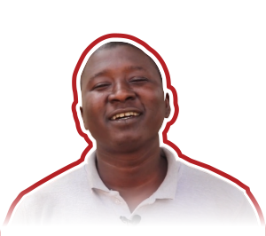
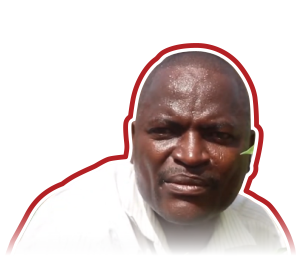

The project TEKKI FII - MAKE IT IN THE GAMBIA, funded by the European Union under the framework of the Emergency Trust Fund for Africa (EUTF for Africa), was implemented in The Gambia for almost four years, between January 2019 and October 2022 by IMVF, with Camões as an institutional partner, and by the implementing partners: Agency for the Development of Women & Children (ADWAC), Alianza por la Solidaridad (ALIANZA) and United Purpose (UP).
The project’s overall objective was to contribute to socio-economic development and to nurture positive prospects for local populations and returning migrants in The Gambia, namely in Central River, North Bank, Lower River and Upper River regions.
Specific objectives (SO) of the action are:
SO1
to boost economic development with a focus on attractive employment and revenue generation in regions prone to migration;
SO2
to promote a conducive socio-economic environment for an effective and sustainable reintegration of former migrants and to improve the attractiveness of rural areas.
Results and Activities:
Result 1. Sustainable market-oriented agribusiness value chains are emerging and/or reinforced in rural Gambia through training (formal/unformal)
Activity 1.1 Assess the viability of various identified sites, market bottlenecks and opportunities and training needs
Activity 1.2 Support to rural agroenterprise development
Activity 1.3 Fostering agribusiness at farm level
Activity 1.4 Reinforcement and diversification of training offers
Result 2. Social cohesion has been strengthened by the activities of local organizations and the implementation of social/recreational facilities
A2.1. Support local community radios to boost their capacity as key information and mobilisation channels
A2.2. Implement innovation and social cohesion
A2.3. Schools for social cohesion programme
Budget
5.000.000€
Period
Jan 2019 ~ Oct 2022
Stakeholders
The project led by IMVF with the institutional support of Camões I.P., was integrated on the larger Emergency Trust Fund for Africa (EUTF for Africa) programme funded by the European Union and implemented by 6 different international institutions.
Funding: European Union
Programme partners: Belgian, Deutsch, and Portuguese Cooperation, as well as by a UN (United Nation) body – respectively, ENABEL (Belgian Development Agency), GIZ (Deutsche Gesellschaft für Internationale Zusammenarbeit), IMVF (Instituto Marquês de Valle Flôr), ITC (International Trade Centre), and IOM (the International Organization for Migration).
The Project Led By IMVF
IMVF Project implementation partners: Instituto Marquês de Valle Flôr (IMVF) with Camões as an institutional partner, Agency for the Development of Women & Children (ADWAC), Alianza por la Solidaridad (ALIANZA) and United Purpose (UP)
The Project was developed in close interplay with national and local government authorities, namely Ministry of Agriculture, Ministry of Youths and Sports, Ministry of Education, among many others.
Foto: IMVF
PROJECT HIGHLIGHTS
1. MAP
The project focused mainly in the rural areas of the Gambia, aiming to reach to the most vulnerable populations and to the youths most exposed to the risks of irregular migration.
The priority geographies for the activities of the agribusiness component were North Bank and Central River Regions, while the activities of the social cohesion component embraced also Lower River Region and Upper River Region.
Components
●Agribusiness support services reinforced ●Market oriented production increased ●Training offers adjusted to market needs ●Network of intergenerational dialogue, recreational and life skills enhancement forums implemented or reinforced ●Reinforced feelings of belonging among the youth and women
Beneficiaries
Institutional project participants by region and component
2. Key figures
The project has achieved or surpassed 93% of the foreseen targets. Some key performance indicators are:
Agribusiness component (result 1):
CARTÃO 1 – Agrobusiness support
325 agroenterprises created or supported
3 value chain reinforced: horticulture, poultry, and small ruminants
225 people assisted to develop income generating activities
17 gardens with new or improved fencing or water access facilities
CARTÃO 2 - capacity strengthened
4.841 rural actors with production capacity strengthen
238 community/volunteer service providers benefiting from capacity building to strengthen service delivery
5 training centres reinforced in the regions, including 2 newly established
362 young Gambians graduated in areas of the agriculture sector (4 months courses and 2 months industrial attachment)
CARTÃO 3 – 846.000€ spent and disbursed
Around 535 000€ disbursement on in-kind support (grants)
Around 315.000€ spent on fencing or water access facilities
Social cohesion component (result 2):
CARTÃO 1 – Social Cohesion activities
46.526 participants
83, including 55 madrassas, engaged
5 youth facilities constructed or rehabilitated
CARTÃO 2 – Migration
346 returnees reached
14.663 migrants or potential migrants impacted
321 activities implemented
CARTÃO 3 – 638.000€ spent
A total of around 160.000€ spent on rehabilitation/construction of centers/sports courts
A total of around 478.000€ spent on Social Cohesion activities, including sports and school’s intervention.
All project
CARTÃO 1 - The project specifically addressed my needs and interests as a woman
97,8% of women surveyed agreed or strongly agree
CARTÃO 2 - The project specifically addressed my needs and interests as a young person
96,2% of youth surveyed strongly agreed
CARTÃO 3 – Improved awareness of the risks of irregular migration and about how to access local economic opportunities in the Gambia
92,6% of respondents agreed
Testemunhos:
Institutional vídeos:
Community Garden Convergence
As the Tekki Fii project came to an end, a convergence meeting of the 32 community vegetable gardens supported during the last 3 years took place in August. The support provided included fencing, drilling boreholes and improvement of well-functioning irrigation systems, provision of quality seeds and tools alongside a continuous coaching for proper group management and good agriculture practices implementation. The support was geared towards the reinforcement of the agriculture value chain and the promotion of meaningful business opportunities for young people in the rural Gambia.
×
Graduation Ceremony
Flashback: 1st Edition of Soma Girls Guide Skills Training Center Students’ graduation ceremony in August 2022. Tekki Fii supported the training of young people and migrant returnees in rural Gambia, in poultry and animal husbandry, to improve job creation and career opportunities.
×
UP documentary
This documentary tells the story of the 'Tekki-Fii' project, which works on improving the lives of young people in The Gambia. The project aims at decreasing irregular migration for the youth - giving them hope and inspiration to make it in The Gambia.
×
3 voices of project participants:
Aminata Jallow
Produção de gelados
×
Jalika Keita
(Jalika Keita is a young farmer from Niamina Dankunku, of Central River Region she started her own farm after completing her university degree in Biology. This is what she has to say to the youth of her region.)
×
Madrassa Migration Awarenes
Tekki Fii has reached out to more than 50 madrassas in Lower River, Central River, North Bank and Upper River Regions promoting awareness on the risks associated with irregular migration, procedures for legal migration and opportunities to make a meaningful living in The Gambia. “Backway is no way, we can make it here!”
×
3. EMPLOYEES
The project has successfully contributed to address some of the most pressing challenges of the country – high poverty rates, high unemployment rates, food insecurity, agricultural system relying heavily on weather conditions (rain-fed agriculture). These challenges affect mostly the youth and women and are among the key push factors of irregular migration. The project has also efficiently addressed some of the biggest challenges in terms of migration prevention and returnees’ sustainable reintegration – lack of skills to secure employment opportunities, lack of funding to develop businesses, feeling of social distance with the community.
523 jobs were created thanks to successful IGA support. This indicator includes youths supported with grants, start-up kits, power tillers and tricycles, which are considered employment created or sustained, as well as indirect jobs generated by the supported MSMEs.
Agribusiness
Business sector
Micro small micro enterprises
Testemunhos:

Mandou Fofana
Rice production
×
Muhammed Keita
Introducing Muhammed Keita, agribusinessman and a seedling champion from Mbulum village of the North Bank Region. He recently got the Tekki Fii agro grant worth D250,000 (about 4.000 EUR)
×
Alfu Marong
Meet Alfu Marong, the owner of Marong Agribusiness Enterprise of Ndofan Village in the North Bank Region. He is involved in animal husbandry and recently benefited from the Tekki Fii agro grant worth D250,000 (around 4,000 EUR). The grant enabled Alfu to increase his staff and productivity, his dream is to expand his business and employ other youths within his region to minimize the level of employment in the country.
×
Foto: IMVF
ACTIVITIES
1. INTERLINK
The combination of an agribusiness and social cohesion component was very complex but proved to be key to the effectiveness of the project. The project participants were often targeted by different activities which promoted a cross level impact, from the individual to the community and the institutions and promoted systemic change.
INFOGRAFIA 6): representativa da interligação das atividades
1.2 Support to rural agro-enterprise development
The activity
The support to rural agro enterprises was based on a threefold approach
Access to finance via the provision of in-kind support (grants, start-up kits for trainees and rural youth awards)
Improvement of the capabilities to successfully manage and run a MSME via trainings in business and management (Micro, small and medium-sized enterprises)
Promotion of market linkage via the participation in trade fairs and the establishment of business networks
Different mechanisms of support to business development were created. Adjusted to youth with different backgrounds and at different stages of business development, the diversity of mechanisms (also with different amounts involved) ensured an inclusive strategy.
Poultry and small ruminants’ production were the sectors mostly benefiting from business development support.
A total of 554 youths benefited from mechanisms of access to finance, from which 71% males, 29% females and 141 returnees.
91,7% of surveyed project participants reported an income increase due to the support of the project and the average increment was 164,4%.
523 jobs were created or sustained
Lessons learned
The continued monitoring of project participants was essential to the results achieved.
The linkage between agents of the value chain (e.g. grantees and suppliers) and between project participantsand regional government authorities (e.g. grantees and Department of Livestock; farmers and Department of Agriculture) promoted networks that survive the project. These networks are key for the consolidation of the supported value chains and for the sustainability of the intervention.
The engagement of project participants on grants in-kind procurement procedures was crucial for ownership and accountability.
Testemunhos:
Ansumana Jammeh
Agriculture inputs
×
James Gomez
James Gomez is a poultry farmer from Lewna Village in North Bank Region, in The Gambia who improved his farm with support from the #TekkiFii Mini-Grant.
×
Malick Suwareh
Meet Malick Suwareh of Koli Kunda in the Central River Region, in The Gambia involved in animal husbandry. He recently benefited from the Tekki Fii agro grant worth up to D250,000 (around 4,000 EUR) in kind to expand his business. With this support, Malick is very passionate about creating jobs for the youth in his community in the future.
×
1.3 Fostering agribusiness at farm level
The activity
Agriculture concentrates the highest proportion of Gambia active population. The mission of the project was to promote a market-oriented production based on a value chain approach. A major intervention was done in community vegetable gardens of NBR and CRR, including:
provision of inputs, tools and small equipment (around 300.000€)
trainings on management and Farm Field Schools (46 farm field schools; 1170 project participants)
support to the creation of market linkages
improvement of fencing and water access facilities (9 gardens)
design of garden development plans (30 garden development plans)
establishment of Revolving Loan Funds (32 revolving funds operating with a total amount of 32.000€ by the end of the project)
capacitation of management committees (193 women)
Key achievements
Total of 3.512 people impacted, 3417 being women (98%)
97,6% of surveyed project participants reported an increase in production, with an average increment of 78% compared to the production before the intervention of the project.
The intervention in agroinfrastructures brough an immediate impact on the livelihoods, liberating the farmers for other activities.
Lessons learned
The linkage between farmers and regional government authorities was promoted. The collaboration with national and regional authorities was key for the alignment with the national priorities of development, facilitated the implementation of the activities and promoted institutional strengthening via key agents capacitation (e.g Department of Agriculture’ extensionists). This joint work was also a sustainability mechanism as it shall facilitate the continuity of the procedures initiated.
The establishment of a revolving loan fund, which registered significant savings/investment capacity at the garden group level and the implementation of training of trainers methodologies adjusted to local realities were successful mechanisms of capacitation and sustainability promotion.
Testemunhos:
Jonsaba Jawara
Tekki Fii project partners IMVF and ADWAC distributed garden tools, inputs and Farmer Field School training materials to support women's gardens in the North Bank Region and Central River Region. One of the beneficiaries Jonsaba Jawara of Kerewan, NBR has this to say
×
1.4 Reinforcement and diversification of training offers
The activity
For the reinforcement of the employability of Gambian rural youth, skills development opportunities were made available within the 4 main regions of project intervention. Skills learning was coupled with entrepreneurship and career guidance sessions as well as migration awareness activities. This was part of a strategy to ensure that the acquisition of knowledge is complemented with the development of soft skills.
Training centres were also supported to open or to strengthen their operations.
INFOGRAFIA 8):
Key achievements
A total of 398 youths have benefited from skills development training (agriculture sector and smart phones repairs), from which 46% males, 54% females
5 training centers strengthened, including 2 new training centres opened in the regions
training opportunities expanded and diversified in the rural areas of the country
Lessons learned
Training centers were supported in a way that allowed their immediate capacity to provide services, but also to generate income. While financial autonomy is not ensured, it was encouraged the development of strategies to diminish their dependency from external support.
Enabling factors (e.g. provision of scholarships for trainees; conditions for breastfeeding mother attendance) were made available to ensure that no youth was excluded for reasons of gender, poverty, culture specificities or education level.
Testemunhos:
Horticulture
“Most times in The Gambia, we think farming is an old man’s job, but farming is meant for us, the young people”, Fatoumatta L. Darboe trainee at Julangel Skills Training Centre
×
Training programme
With the support of #TekkiFii, 14 returnees will soon accomplish a training programme in small engines’ repairs provided by Gambia Technical Training Institute (GTTI) in Julangel (URR)
×
2.1 Support local community radios to boost their capacity as key information and mobilisation channels
The activity
Radios were supported in terms of equipment (around 45.000€) and infrastructure which, coupled with management and journalism trainings led to strengthen their role as communication channels
Key achievements
the involvement of community radios has brought together various community actors and fostered intergenerational dialogue about the risks of irregular migration and the economic development opportunities for young people in The Gambia
Lessons learned
The usage of various communication and dissemination channels was crucial to achieve a wider audience and radios were key to go beyond youths
Testemunhos:
Words from the radios #1 | Seedy Dampha
Tekki Fii is supporting community radios as key platforms for communication in rural areas of The Gambia, reaching out even to the most isolated communities.
×
Words from the radios #2 | Sainey Dibba
Farafenni Community Radio Manager of Programmes Mr. Sainey Dibba, giving an overview of the impact of the radio equipment provided to his radio station by the #TekkiFii Project. Also, as Vice President of the Network of Community Radios, thanking the European Union funded project for the support provided to community radios is Central River Region, North Bank Region and Lower River Region.
×
Words from the radios #3 | Jerreh Dibba
Jerreh Dibba, station manager of North Bank Community Radio (Kerewan) giving his testimony of how the support provided is improving their daily work and thanking EU through IMVF for the gesture.
×
Siaka Sinera
Radio: The acting manager of Brikamaba Community Radio, Siaka Sinera expressing how the support from the Tekki Fii project is improving their operations and expressing satisfaction with the provided equipment
×
A2.2 Implement innovation and social cohesion hubs
The establishment or reinforcement of youth led facilities providing meaningful services to the youth and the overall community was a key dimension of the social cohesion component.
By boosting the youth role on community development and promoting intergenerational recognition one major push factor of migration was address – youth (lack of) social valorisation.
Over one hundred activities were implemented at the community level, to encourage the discussions on the risks of irregular migration paths of safe migration and opportunities in the country, particularly in the agribusiness and the sports sectors.
The networks of youth friendly places were expanded as endeavoured by the National Development Plan 2018-2021
Key achievements
55 learning circles or outreach initiatives that reached more than 2400 project participants and 30 initiatives of sports for development that reached more than 1300 project participants.
1 Youth center and 1 multipurpose hall rehabilitated; 1 new youth center built;
1 basketball/volleyball court built and 1 basketball/volleyball court rehabilitated
93% of surveyed people strongly agree they are now better aware of the opportunities in the country and of the risks of irregular migration then before benefiting from the Project
Lessons learned
The strengthening the organizational capacity of youth led facilities is key for their sustainability
These facilities have an important potential as income generation spaces that can create employment and promote meaningful social encounters.
Testemunhos:
Amie Lowe
On Saturday 20th March 2021, the Tekki Fii - Building a Future: Make it in The Gambia project led by IMVF in partnership with Bansang Youth Center was on a day long Caravan Tour on irregular migration sensitization targeting the communities of Bansang and the surrounding villages. Amie Lowe, Bansang Youth Center Animator for IMVF talking about the aims of the tour.
×
Sheriffo Mboge
Sheriffo Mboge, NBR regional program officer from the National Youth Council on the importance of having sensitization campaigns about the available Tekki Fii grants in his Region.
×
2.3 Schools for social cohesion programme
The activity
Schools were engaged as a key stage to promote mindset and behavioural change across generations by mobilising the overall school community - students, teachers, families and the schools’ surrounding communities. Activities were based on three thematic areas:
Agribusiness
activities included training in agro food processing, visit to companies of the agriculture sector, provision of inputs, tools, fencing and improvement of water infrastructures of schools vegetable gardens;
Sports
activities included training in sports for development, provision of equipment and improvement of sports facilities, interschool football tournaments;
Migration
activities included training of teachers, development and recording of drama plays, video and poetry events, open discussions, among many others. The activities on migration reached both to mainstream schools (25) and madarassas (58).
Key achievements
93 awareness raising activities on migration at school or community level and 2 inter-school sports tournaments supported
Learning and teaching experiences improved: vegetable gardens became a place for practical learning experiences.
Some vegetable gardens were able to generate revenue and to establish trading channels with the communities.
8 schools with improved water access facilities
Interregional school sports tournaments promoted
Pioneer outreach to madarassas communities
Lessons learned
the school is a key space to promote the change of narratives and attitudes and, by engaging the overall school community, it has the potential to generate systemic change
target the school community at madarassas is key to reach to youth vulnerable to irregular migration
Testemunhos:
Returnees:
Seedy Sage
Seedy Sage, a returnee explains why he came out and shares his backway journey with participants of training of teachers for migration.
×
Migration:
Hulaymatou Njim
IMVF in partnership with Activista The Gambia through the Tekki Fii - Building a Future: Make it in The Gambia project in The Gambia conducted a training of teachers on irregular migration. On the final day of the training we spoke to one of the participants, Hulaymatou Njim.
×
SPORTS FOR DEVELOPMENT :
Pa Modou Ngum
"Tekki Fii is doing a lot in helping our youth and we definitely apreciate it", Pa Modou Ngum, Regional Coordinator of Secondary School Sports.
×
Abdouli Sowe
"We are really happy of this gesture [the delivery of sports equipment and material] because it will also improve teaching and learning in classroom", Abdouli Sowe, Head of Sports Department in Jareng Upper, Senior and Secondary School.
×
WORK ON SCHOOLS’ VEGETABLE GARDENS :

Mr. Akeem
IMVF and partners, through the Tekki Fii Project, are supporting school gardens with agriculture tools, seeds, and garden maintenance supplies to encourage students into the agribusiness sector and to facilitate the learning of agriculture. Mr. Akeem is an agricultural science teacher at Tahir Upper and Senior Secondary School, and this is what he has to say about the support.
×
5. CONTINUTY OF THE RESULTS:
The intervention was highly grounded on a capacitation principle and on the engagement of national and regional stakeholders who have the potential to continue with the development procedures initiated or reinforced during the project.
At the level of access to finance, development partners and private sector agents are already absorbing the project participants process of empowerment or for the provision of new services, according with their new economic capacity. Also, the specific mechanisms of access to finance put in place by the project – namely, the grants and the start-up kits, both based on a selection procedure – have been replicated by other institutions.
A monitoring system of project participants put in place that also engaged the regional agriculture structures. These structures have manifested the interest to continue monitoring the project participants.
Training centres, youth centres, and schools were supported in a way that allowed their immediate capacity to provide services, but also to generate income. While financial autonomy is not ensured, it was encouraged the development of strategies to diminish their dependency from external support.
A revolving fund was created in vegetable gardens, which established significant savings at the garden group level, to be invested in further acquisitions of supplies or for the maintenance of the infra-structures.
Testemunhos:
Fatoumatta O. Bah
Fatoumatta O. Bah, an agribusiness beneficiary from NBR who started her business in 2020 commends Tekki Fii, and talks about her growing capacities as a female animal husbandry proprietor and plans on empowering more females in her field alongside creating job opportunities in the near future.
×
Entrepreneurship Training
After graduation, the most outstanding students supported by Tekki Fii receive an in-kind start-up kit to boost their capacity to create businesses and employment opportunities in the rural areas of The Gambia. Check the video for some of the inspiring stories.
×
Alieu Jallow
"Since I acquired the grant, I was able to expand my business by bought more animals. I was able to get better feeds and medications for the animals, so definitely the agro-grant have a gone way in expanding my business and then ensuring that the business is sustainable.", Alieu Jallow, agro-grant beneficiary.
×
6. LESSONS LEARNED
The decentralisation of activities was key for the promotion of opportunities in the country. The adjustment to local languages and the inclusion of illiterate population ensured that no one was left behind.
The attention for the decentralization of suppliers, factoring in different urban/rural costs but also transportation costs, has proved to be beneficial. A positive side effect of the project has been the support to local businesses via the purchases made.
Some examples of linkages with the private sector (e.g. availability to receive internships; funding of construction works), bring confidence that it is possible to strengthen cross sector partnerships for development goals.
While the implementation of positive discrimination measures targeted to returnees were initially discarded to avoid increased stigmatization at the community level, it became evident that this is a segment of the population with characteristics that often call for particular economic, health and social measures. The Project has adjusted the intervention to ensure a greater inclusion of returnees.
Strategies were designed to address more than one root cause of irregular migration.
The interlinkage of activities has ensured an integrated approach project participantsproject participantsand promoted systemic change.
Methodologies such as ToT and peer-to-peer coaching were crucial to promote horizontal learning processes adjusted to local realities.
Happening now in The Gambia🇬🇲
Today, #IMVF through the #TekkiFii project is holding its first Agro and Mini grantees convergence at the AFPRC general hospital hall in Farafenni, North Bank Region.
Foto: IMVF
CONCLUSION
7. KEY FINDINGS OF THE FINAL EXTERNAL EVALUATION
The purpose of the evaluation was to assess the relevance, effectiveness, efficiency, contribution to impact, and sustainability and transferability of the Tekki Fii project by examining the strategies and implementation processes; analysing the achievement of the outcomes; and understanding the perceived impact according to the participants and key stakeholders.
RELEVANCE
The project contributes to different commitments undertaken at the international level.
It is consistent with the priorities of the EUTF for Africa and with local initiatives.
It has addressed some of the most pressing economic needs of vulnerable rural populations.
It took measures to promote that all the project participants could participate in equal conditions.
Strategies were designed to address more than one root cause of irregular migration.
Some actions contributed to gender and youth mainstreaming.
EFFECTIVENESS
The project achieved the 93% of the outcome and output indicators.
It has a comprehensive strategy in terms of areas and levels of intervention.
Throughout the project some adaptations were made to mitigate the challenges that some vegetable gardens faced in terms of water supply and fencing, which contributed to promote a shift to a sustainable market-oriented agriculture
In the incorporation of a value chain approach, it gave greater weight to actions aimed at strengthening the production component.
The communication strategy was effective; it included various channels to reach the project participants
EFFICIENCY
The project allowed and encouraged the meaningful engagement of key government agencies in the different stages of the project.
The coaching and monitoring of grantees, schools, and vegetable gardens are key factors that contributed to the success of the agribusiness component.
Delays in the completion of rehabilitation activities and communication issues with youth centres and multipurpose halls hampered the contribution of the project to strengthening their capacity.
CONTRIBUTION TO IMPACT
Individual level (grantees and vegetable gardens): increases in income generation, knowledge and skills; emergence of referents within the community; changes in youth mindset towards agriculture; improvements in the availability of inputs and tools and in the capacity for self-organization.
Immediate environment level: improvements in the well-being of families and in the availability of reintegration opportunities for returnees; emergence of role models to encourage entrepreneurship in agriculture; creation of employment opportunities for other youth; improvements in the cohesion of women's groups.
Community level (schools, skills training centres, radios): they have the potential to generate systemic changes. They brought together different community actors to engage in dialogue about the risks of irregular migration and the economic development opportunities in The Gambia.
SUSTAINABILITY AND TRANSFERABILITY
The provision of seed capital, the acquisition of knowledge and the development of skills have laid a solid foundation that can help sustain income-generating activities.
The monitoring and coaching strategy has the potential to continue supporting the growth of the project participants and to optimize a model to support other farmers.
Leaving capacities installed in structures favours the transmission of information and the development of skills in the long term.
The activities implemented with the purposes of fostering community and intergenerational dialogue, require the support of the community to be sustainable over time.
8. TESTIMONIES
INSERT:
7 CASE STUDIES – LIFE STORIES
Total institutional beneficiaries
Grants
Gardens
Trainings
Schools
Successful entrepreneurs mobilised as role model in awareness raising campaigns Radios mobilised to inform grant opportunities
Beneficiaries of awareness raising campaigns (grants, migration) provided by youth groups Young entrepreneurs received with power tillers and tricycles to provide services to gardens, similar to a grant scheme Radios mobilised to inform small holder farmers
Most successful trainees provided with a start-up kit similar to a mini-grant Trainees supported to business development with entrepreneurship training Beneficiaries of migration awareness raising provided by youth groups youth groups mobilised to ensure recruitment campaigns in most remote locations Radios mobilised to inform training opportunities
Youth groups mobilised to provide migration awareness raising campaigns in koranic schools Radios airing drama plays developed by the schools
Community Outreach Schools Radios
Community Outreach Grants Radios
Grants
Grants
Community Outreach
Community Outreach